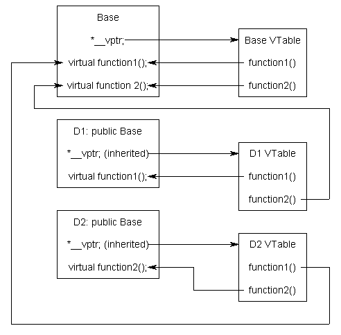

Consider the following program:
#include <iostream>
#include <string_view>
class Base
{
public:
std::string_view getName() const { return "Base"; } // not virtual
virtual std::string_view getNameVirtual() const { return "Base"; } // virtual
};
class Derived: public Base
{
public:
std::string_view getName() const { return "Derived"; }
virtual std::string_view getNameVirtual() const override { return "Derived"; }
};
int main()
{
Derived derived {};
Base& base { derived };
std::cout << "base has static type " << base.getName() << '\n';
std::cout << "base has dynamic type " << base.getNameVirtual() << '\n';
return 0;
}
First, let’s look at the call to
base.getName()
. Because this is a non-virtual function, the compiler can use the actual type of
base
(
Base
) to determine (at compile-time) that this should resolve to
Base::getName()
.
Although it looks almost identical, the call to
base.getNameVirtual()
must be resolved differently. Because this is a virtual function call, the compiler must use the dynamic type of
base
to resolve the call, and the dynamic type of
base
is not knowable until runtime. Therefore, only at runtime will it be determined that this particular call to
base.getNameVirtual()
resolves to
Derived::getNameVirtual()
, not
Base::getNameVirtual()
.
So how do virtual functions actually work?
The virtual table
The C++ standard does not specify how virtual functions should be implemented (this detail is left up to the implementation).
However, C++ implementations typically implement virtual functions using a form of late binding known as the virtual table.
The virtual table is a lookup table of functions used to resolve function calls in a dynamic/late binding manner. The virtual table sometimes goes by other names, such as “vtable”, “virtual function table”, “virtual method table”, or “dispatch table”. In C++, virtual function resolution is sometimes called dynamic dispatch .
Nomenclature
Here’s an easier way of thinking about it in C++:
Early binding/static dispatch = direct function call overload resolution
Late binding = indirect function call resolution
Dynamic dispatch = virtual function override resolution
Because knowing how the virtual table works is not necessary to use virtual functions, this section can be considered optional reading.
The virtual table is actually quite simple, though it’s a little complex to describe in words. First, every class that uses virtual functions (or is derived from a class that uses virtual functions) has a corresponding virtual table. This table is simply a static array that the compiler sets up at compile time. A virtual table contains one entry for each virtual function that can be called by objects of the class. Each entry in this table is simply a function pointer that points to the most-derived function accessible by that class.
Second, the compiler also adds a hidden pointer that is a member of the base class, which we will call
*__vptr
.
*__vptr
is set (automatically) when a class object is created so that it points to the virtual table for that class. Unlike the
this
pointer, which is actually a function parameter used by the compiler to resolve self-references,
*__vptr
is a real pointer member. Consequently, it makes each class object allocated bigger by the size of one pointer. It also means that
*__vptr
is inherited by derived classes, which is important.
By now, you’re probably confused as to how these things all fit together, so let’s take a look at a simple example:
class Base
{
public:
virtual void function1() {};
virtual void function2() {};
};
class D1: public Base
{
public:
void function1() override {};
};
class D2: public Base
{
public:
void function2() override {};
};Because there are 3 classes here, the compiler will set up 3 virtual tables: one for Base, one for D1, and one for D2.
The compiler also adds a hidden pointer member to the most base class that uses virtual functions. Although the compiler does this automatically, we’ll put it in the next example just to show where it’s added:
class Base
{
public:
VirtualTable* __vptr;
virtual void function1() {};
virtual void function2() {};
};
class D1: public Base
{
public:
void function1() override {};
};
class D2: public Base
{
public:
void function2() override {};
};
When a class object is created,
*__vptr
is set to point to the virtual table for that class. For example, when an object of type Base is created,
*__vptr
is set to point to the virtual table for Base. When objects of type D1 or D2 are constructed,
*__vptr
is set to point to the virtual table for D1 or D2 respectively.
Now, let’s talk about how these virtual tables are filled out. Because there are only two virtual functions here, each virtual table will have two entries (one for function1() and one for function2()). Remember that when these virtual tables are filled out, each entry is filled out with the most-derived function an object of that class type can call.
The virtual table for Base objects is simple. An object of type Base can only access the members of Base. Base has no access to D1 or D2 functions. Consequently, the entry for function1 points to Base::function1() and the entry for function2 points to Base::function2().
The virtual table for D1 is slightly more complex. An object of type D1 can access members of both D1 and Base. However, D1 has overridden function1(), making D1::function1() more derived than Base::function1(). Consequently, the entry for function1 points to D1::function1(). D1 hasn’t overridden function2(), so the entry for function2 will point to Base::function2().
The virtual table for D2 is similar to D1, except the entry for function1 points to Base::function1(), and the entry for function2 points to D2::function2().
Here’s a picture of this graphically:

Although this diagram is kind of crazy looking, it’s really quite simple: the
*__vptr
in each class points to the virtual table for that class. The entries in the virtual table point to the most-derived version of the function that objects of that class are allowed to call.
So consider what happens when we create an object of type D1:
int main()
{
D1 d1 {};
}Because d1 is a D1 object, d1 has its *__vptr set to the D1 virtual table.
Now, let’s set a base pointer to D1:
int main()
{
D1 d1 {};
Base* dPtr = &d1;
return 0;
}
Note that because dPtr is a base pointer, it only points to the Base portion of d1. However, also note that
*__vptr
is in the Base portion of the class, so dPtr has access to this pointer. Finally, note that
dPtr->__vptr
points to the D1 virtual table! Consequently, even though dPtr is of type
Base*
, it still has access to D1’s virtual table (through
__vptr
).
So what happens when we try to call dPtr->function1()?
int main()
{
D1 d1 {};
Base* dPtr = &d1;
dPtr->function1();
return 0;
}
First, the program recognizes that function1() is a virtual function. Second, the program uses
dPtr->__vptr
to get to D1’s virtual table. Third, it looks up which version of function1() to call in D1’s virtual table. This has been set to D1::function1(). Therefore,
dPtr->function1()
resolves to D1::function1()!
Now, you might be saying, “But what if dPtr really pointed to a Base object instead of a D1 object. Would it still call D1::function1()?”. The answer is no.
int main()
{
Base b {};
Base* bPtr = &b;
bPtr->function1();
return 0;
}
In this case, when b is created, b.__vptr points to Base’s virtual table, not D1’s virtual table. Since bPtr is pointing to b,
bPtr->__vptr
points to Base’s virtual table as well. Base’s virtual table entry for function1() points to Base::function1(). Thus,
bPtr->function1()
resolves to Base::function1(), which is the most-derived version of function1() that a Base object should be able to call.
By using these tables, the compiler and program are able to ensure function calls resolve to the appropriate virtual function, even if you’re only using a pointer or reference to a base class!
Calling a virtual function is slower than calling a non-virtual function for a couple of reasons: First, we have to use the
*__vptr
to get to the appropriate virtual table. Second, we have to index the virtual table to find the correct function to call. Only then can we call the function. As a result, we have to do 3 operations to find the function to call, as opposed to 2 operations for a normal indirect function call, or one operation for a direct function call. However, with modern computers, this added time is usually fairly insignificant.
Also as a reminder, any class that uses virtual functions has a
*__vptr
, and thus each object of that class will be bigger by one pointer. Virtual functions are powerful, but they do have a performance cost.